LangChain 生态演进 · 8 阶段体系化拆解
0为什么单独看 LangChain 演进
把 LangChain 生态过去 3 年的演进，按"社区压力 → 设计回应 → 产出 → 留下的问题 → 下一阶段起爆点" 五段式拆成 8 个阶段。不只是讲 LangChain 是什么，而是把它当成整个 Agent 运行时演进的活样本——读懂它的转向，基本就读懂了从 Chain → DAG → 状态机 → 平台 的整条路。
为什么独立成册：之前在《Agent 3 层理念架构》里 LangChain 章节偏散点——只引用了 Harrison Chase 几段博客原话当证据，读者反馈"看不出体系"。本篇换一种讲法：不靠"谁说了什么"，靠社区硬数据（PyPI 月下载量、GitHub stars 增长、HN 批评原帖 ID、竞品 star 对比、商业融资里程碑）。
核心论断（先说结论）：LangChain 三年演进不是"组件越堆越多"，而是 从应用拼装库，逐步退化成协议入口——把真正的 Agent 复杂性下沉到一个可恢复、可观测、可中断 的运行时（LangGraph）。这条主线适用于 所有 未来想做生产级 Agent 框架的人。
读法建议：第 1 章看速查表立刻知道全图；第 2 章看当前生态规模；第 3-10 章是 8 个阶段五段式精读；第 11 章把规律提炼成 3 条可迁移的演进定律；第 12 章给"对未来 Agent Runtime 的判断"。每段尾部带社区数据出处，可直接溯源。
1速查 · 8 阶段一览

下表把 8 个阶段、时间区间、核心矛盾、关键产出物、单条最硬数据 一次给齐。每行后续在第 3-10 章展开。
| # | 阶段名 · 时间 | 核心矛盾 | 关键产出 | 最硬一条数据 |
|---|---|---|---|---|
| 1 | Chain 爆发期 2022-10~2023-Q1 | ChatGPT 引爆需求，开发者急缺"prompt + retriever + tool" 脚手架 | langchain Python 包 · Chain / LLMChain / SequentialChain / AgentExecutor | GitHub stars 2023-02 5k → 2023-04 18k（2 个月 3.6×）；Benchmark $10M Seed |
| 2 | 抽象反噬期 2023-Q2~2023-08 | "用的人多了就发现难控"——抽象黑盒、prompt 藏在框架里、调试痛 | (无产品产出，主要是压力积累) | HN 6 个原帖批评：ID 36097439 / 36442231 / 36645575 / 36647964 / 36648272 / 36725982 |
| 3 | LCEL 修补期 2023-08~2023-12 | 第一次"把 Chain 拆透明"的尝试——统一接口、可组合、原生流式 | LCELLCEL（LangChain Expression Language）= 2023-08 LangChain 发布的新核心抽象：把所有可调用单元统一成 Runnable 接口，用 Python 的 | 操作符组合（prompt | model | parser）。一次性把 stream / batch / async / retry / fallback 这些工程能力做成原生支持。本质是 DAG——可以并行、可以分叉，但不能循环。 · RunnableRunnable = LCEL 的统一接口基类。所有 LCEL 组件（prompt / model / parser / retriever / tool）都实现这个接口，有 invoke / stream / batch / ainvoke 等方法。核心价值：把各种异构组件压成同一接口，可以用 | 自由拼装。langchain-core 包就是为了独立分发这套接口而拆出来的。 / RunnableSequence / RunnableParallel · | 操作符 | langchain-core 现累计 PyPI 下载 1.30B，月下载 109M（2026-05 实测） |
| 4 | 多 Agent 心智争夺期 2023-09~2024-01 | AutoGen / CrewAI 抢"多 agent runtime" 叙事；LangChain 不能只靠 LCEL 回应 | （设计酝酿，2024-01 出 LangGraph） | AutoGen 2023-09-29 发布累计 stars 58.3k；CrewAI 2023-10-27 仓库创建累计 stars 52.1k |
| 5 | LangGraph 确立期 2024-01~2024-05 | 把 AgentExecutor 的"一种循环" 升级为"显式状态图 runtime" | LangGraph · StateGraphStateGraph = LangGraph 的核心抽象：用户用 add_node / add_edge / add_conditional_edges 描述一个有状态的图，节点是函数，边是条件路由，整张图共享一个 State schema（TypedDict）。支持循环——A → B → A 没问题；这是它替代 LCEL 做 Agent runtime 的关键。 · PregelPregel = Google 2010 年发的图计算论文（同名系统跑全网爬虫图）。核心是 BSP（Bulk Synchronous Parallel）模型——把"循环" 切成多个 superstep，每步分 Plan / Execution / Update 三阶段，每步结束可以 checkpoint、可以中断、可以恢复。LangGraph 的 CompiledStateGraph 直接继承 Pregel 类。 · ChannelChannel = LangGraph 节点之间的通信通道，决定多个入边的写入怎么合并。常用类型：LastValue / Topic / BinaryOperatorAggregate / EphemeralValue / AnyValue（reducer 决定合并规则）。 · CheckpointerCheckpointer = 每次 superstep 结束后把 State 持久化到 SQLite / Postgres / Redis 的组件。让 Agent 跑挂了能从断点恢复。也支持时间旅行：可以读历史 State 改一改再 resume。 · interrupt()interrupt() = LangGraph 节点里调用这个函数，会立刻写盘 + 退出整个图，把控制权交回外部。外部喂回人审决策后从断点继续。是 HITL 的标准实现。 | 2024-01-08 v0.1.0 + 同时官宣 LangGraph；2024-01-17 发布博客明确点名 DAG 局限 |
| 6 | 推荐路径迁移期 2024-05~2024-11 | 新 runtime 出来了，但旧 LangChain 抽象债没消失，社区认知滞后 | v0.2 把 LangGraph 升为"recommended way"；prebuilt agent；create_react_agent | Octomind《Why we no longer use LangChain》HN 480 分（id=40739982）；Harrison 亲自下场回应 |
| 7 | 平台化取舍期 2024-11~2025-10 | "怎么跑" 解决了，怎么观测/评估/部署 成为新瓶颈 | LangServe deprecated；LangSmith trace+eval 强化；LangGraph Platform 商业化 | LangSmith 用户 70k beta → 80k GA → 250k+（2025-02），累计 1B traces，12× YoY |
| 8 | 1.0 收敛期 2025-10~至今 | 4 条产品线（LangChain / LangGraph / LangSmith / Platform）必须给企业稳定承诺 | LangChain 1.0 + LangGraph 1.0 GA · create_agentcreate_agent() = LangChain v1（2025-10）唯一推荐的 Agent 入口函数。一行代码起 Agent：agent = create_agent(model, tools=[...], system_prompt=...)。底层完全跑在 LangGraph 上——内部用 StateGraph 编排了一个标准的 ReAct loop，但用户不需要知道。这是 LangChain"门面变薄、runtime 下沉" 的标志。 替换 AgentExecutor · 旧物迁入 langchain-classic | Series B $125M @ $1.25B 估值（独角兽，2025-10-20）；LangGraph v1.x 发布 7 个月占 60%+ 下载 |
怎么读这张表：横向看是一条线性进化，纵向看每段都是 "外部压力（社区/竞品/批评） → 内部回应（设计 + 版本）" 的循环。把这条循环看明白，比记每个组件叫什么名字重要 100 倍。
2当前生态全景（2026-05 实测）
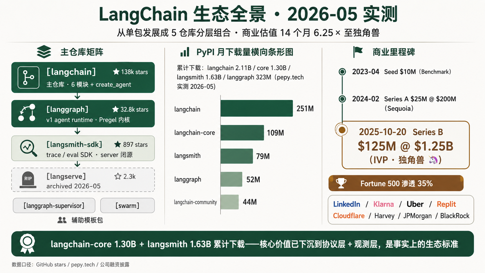
在进入阶段拆解前，先把"今天的 LangChain 长什么样" 用数据展示一下，避免读者把它想成 2022 年那个单包脚手架。
2.1仓库矩阵
| 仓库 | 协议 | 状态 | stars | 定位 |
|---|---|---|---|---|
langchain-ai/langchain | MIT | active | 138k | 主仓库（monorepo）：langchain-core（Runnable）/ langchain v1（瘦身后 6 模块 + create_agent）/ langchain-classiclangchain-classic = LangChain v1（2025-10）把旧 Chain / AgentExecutor / 旧 memory / 旧 vectorstores 整体迁移到的归档包。仍能装（pip install langchain-classic）、仍能跑，但不再加新功能、官方明确建议新项目不要用。这是 LangChain 给历史包袱安排的"博物馆"。） |
langchain-ai/langgraph | MIT | active | 32.8k | v1 agent 真正的 runtime。CompiledStateGraph 直接继承 Pregel（graph/state.py:1391-1392） |
langchain-ai/langsmith-sdk | MIT | active | 897 | 客户端 SDK，trace / dataset / eval 上报。server / Platform 闭源付费 |
langchain-ai/langserve | MIT | archived 2026-05-05 | 2.3k | 把 Runnable 暴露成 FastAPI 服务的工具。deprecated 2024-11-18，官方建议改用 LangGraph Platform |
langgraph-supervisor / langgraph-swarm | MIT | 辅助 | — | 多 Agent 模板包，适合 demo / 低风险编排 |
2.2PyPI 下载（pepy.tech / pypistats 实测 2026-05-24）
| 包 | 累计下载 | 近 30 天 | 近 24 小时 | 下载速率 |
|---|---|---|---|---|
langchain | 2.11 B | 251 M | 10.8 M | 111.71 / s |
langchain-core | 1.30 B | 109 M | 4.6 M | 55.87 / s |
langsmith | 1.63 B | 79 M | 297 k | 32.43 / s |
langgraph | 323 M | 52 M | 1.3 M | 23.25 / s |
langchain-community | — | 44 M | — | — |
读数据：langchain-core 1.30B + langsmith 1.63B 说明 LangChain 的"核心价值已经从应用层下沉到协议层 + 观测层"——langchain-core 已成协议层事实依赖（大量第三方框架直接依赖它的 Runnable / Tool / Message 接口），LangSmith 下载量与 trace 量说明观测层需求强劲。
2.3商业 / 融资里程碑
- 2023-04 Seed：$10M，Benchmark 领投
- 2024-02-15 Series A：$25M，Sequoia 领投，估值 $200M（同期 LangSmith GA）
- 2025-10-20 Series B：$125M，估值 $1.25B（独角兽），IVP 领投，CapitalG / Sapphire 新进
- 累计融资 ≈ $160M；估值 14 个月 6.25×（200M → 1.25B）。员工数 2025-02 时点 68 人
- Fortune 500 渗透 35%（公开客户：LinkedIn / Klarna / Uber / Replit / Cloudflare / Harvey / Rippling / J.P. Morgan / BlackRock / GitLab 等）
2.4同类框架对比（2026-05-24 stars）
| 项目 | stars | 首次开源 | 月下载（最新） | 定位 |
|---|---|---|---|---|
| langchain-ai/langchain | 138 k | 2022-10 | 251 M | 应用脚手架 + 协议层 |
| microsoft/autogen | 58.3 k | 2023-09 | 1.3 M | 多 agent 会话 runtime |
| crewAIInc/crewAI | 52.1 k | 2023-10 | 5 M | 角色协作 / crew / task |
| run-llama/llama_index | 49.6 k | 2022-11 | — | RAG / index |
| langchain-ai/langgraph | 32.8 k | 2024-01 | 52 M | 状态图 runtime（v1 agent 底座） |
读数据：LangChain stars 是 AutoGen 的 2.6×、LangGraph 的 4.2×，但 stars 是历史累计；LangGraph 月下载 ≈ 40× AutoGen——这是更强的工程采用信号（依赖活跃度，不直接等同于生产部署规模）。CrewAI 多 agent 心智不能忽视，但生产部署体量远低于 LangGraph。
3阶段 1 · Chain 爆发期 · 把 LLM 应用先串起来 · 2022-10~2023-Q1
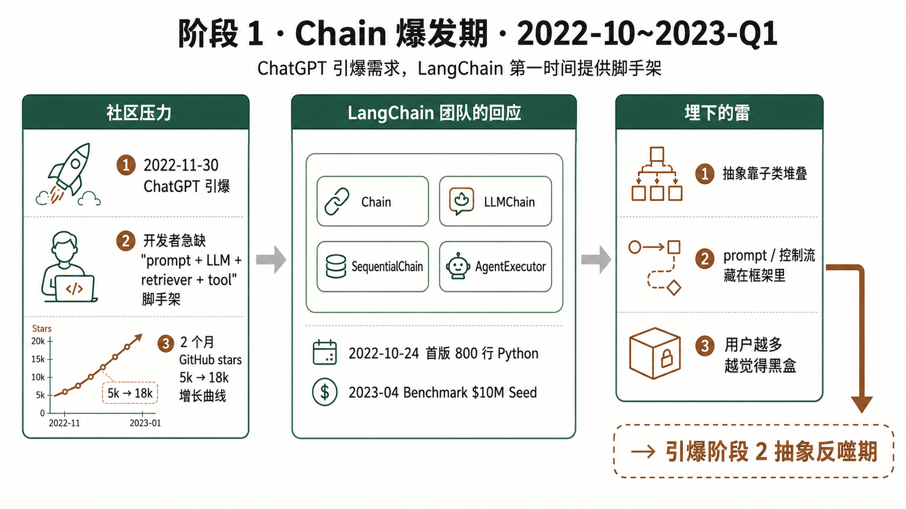
社区压力
- ChatGPT 2022-11-30 引爆 LLM 应用需求，开发者急需"prompt + LLM + retriever + tool" 应用脚手架。2022-10-24 Harrison Chase（前 Robust Intelligence 工程师）写出 LangChain 第一版（800 行 Python），刚好踩在 ChatGPT 发布前一个月，吃到了红利。
- GitHub stars 2 个月 3.6×：2023-02 ≈ 5k → 2023-04 ≈ 18k；同期 Benchmark $10M Seed 入场。Runa Capital ROSS Index Q2 2023 把 LangChain 列入增长最快开源创业公司。
LangChain 团队的设计回应
- 产出：
langchainPython 包；核心抽象是ChainChain = LangChain 早期最基础的抽象，把一次 LLM 调用 + 输入处理 + 输出解析包成一个可复用步骤。父类下面有几十种子类：LLMChain（单模型调用）、SequentialChain（串多个 Chain）、ConversationChain（带历史的对话）……越加越多最终被批"过度抽象"，v1 后整体迁入 langchain-classic 归档。 /LLMChainLLMChain = 最常用的 Chain 子类：prompt 模板 + LLM 调用 + 输出解析三件套。早期所有 LangChain 教程的第一行代码几乎都是chain = LLMChain(llm=llm, prompt=prompt)。LCEL 出现后被prompt | model | parser替代。 /SequentialChainSequentialChain = 把多个 Chain 串起来跑（前一个的输出当后一个的输入）。被 HN 批评的典型："要改一个细节得穿过 5 层抽象"。LCEL 的|操作符就是为了替代它——同样的功能改成chain_a | chain_b | chain_c，透明可读。 /AgentExecutorAgentExecutor = LangChain 早期的 Agent 运行循环：内部硬编码"think → tool call → observe → think" 循环，加一堆参数（max_iterations / early_stopping / handle_parsing_errors…）。Harrison 自己承认它"只是一种 loop"——加再多参数都改不了控制流。2025-10 v1 正式 deprecated，被 create_agent（跑在 LangGraph 上）替换。。靠子类化堆叠出几十种预制 Chain。 - 版本：2022-10-24 首次 Python 包发布；后续 0.0.x 高速迭代，每周一版。
核心抽象 + 工程价值
Chain：把 LLM 调用包装成可复用步骤。工程价值：先让应用拼得起来，从 0 到 1 的脚手架。
没解决的问题 → 起爆点
抽象靠子类堆叠，prompt 和控制流被藏在框架里；用户越多，黑盒感、难调试、难组合的问题暴露越快——直接引出阶段 2 抽象反噬期。
4阶段 2 · 抽象反噬期 · 增长带来黑盒批评 · 2023-Q2~2023-08
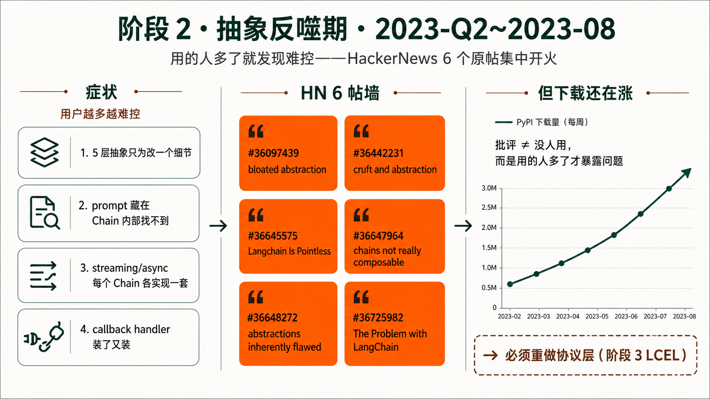
社区压力
- HN 6 个原帖集中批评（2023 Q2/Q3，按时间序）：
- id=36097439 · 2023-05 · "So much 'Yes!' for LangChain being bad practice. An unnecessarily bloated abstraction..."
- id=36442231 · 2023-06 · "I'm really puzzled about LangChain. It looks like a lot of cruft and abstraction..."
- id=36645575 · 2023-07 · "Langchain Is Pointless"
- id=36647964 · 2023-07 · "the chains they say are 'composable' are not really composable"
- id=36648272 · 2023-07 · "I believe the abstractions in Langchain are inherently flawed"
- id=36725982 · 2023-07 · "The Problem with LangChain"
- 典型原话："you have to go through 5 layers of abstraction just to change a minute detail" / "death by abstraction" / "abstraction over abstractions — chains, runnables, agents, tools, callbacks…"
- 但 stars / 下载继续涨——说明批评不是"没人用"，而是"用的人多了以后发现难控"。这种"增长 × 批评" 的双重压力必须用产品回应。
LangChain 团队的设计回应
- 这一阶段没有立即出新产品，是压力积累期。团队转向"不再加新 Chain 子类，而是重新设计协议" 的方向——这是 LCEL 出现的直接前提。
- 旁支：同期 2023-07 LangSmith closed beta 启动（70k 候补），但这是观测痛点的回应，不是 Chain 抽象的回应；对 Chain 抽象的直接回应留到下一阶段 LCEL。
核心抽象 + 工程价值
（无新抽象。本段的工程价值在于团队选择"不堆新组件，而是重做协议"——这是 LCEL 出现的前提。）
没解决的问题 → 起爆点
批评焦点全部集中在"预制 Chain 子类太多、prompt 不透明、组合性差"，下一步必须出一个统一可组合协议——直接催生阶段 3 LCEL。
5阶段 3 · LCEL 修补期 · 从 Chain 子类到 Runnable 协议 · 2023-08~2023-12
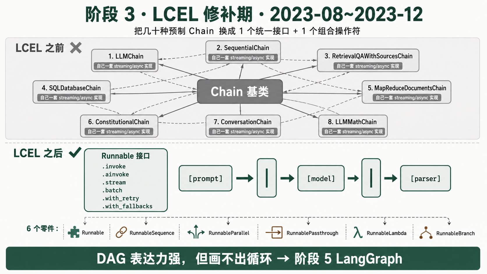
| 管道 + 6 个基础零件）—— 一图说清 LCEL 是什么、解决了什么。社区压力
- 承接阶段 2 HN 抱怨——核心诉求是"统一接口 + 透明组合 + 原生流式 + 原生 async"。LCEL 不是凭空发明，是 5 条 HN 痛点一一回应的产物。
- OpenAI 2023-06 发布 function calling，把"结构化输出 / 工具调用" 做成原生能力——LangChain 需要一个足够薄的协议层把新能力第一时间接进来，老 Chain 子类化模式跟不上节奏。
- LCEL 后续验证：
langchain-core累计 PyPI 下载 1.30 B，2026-05 月下载 109M——协议层被大量生态依赖，连 LangChain 的竞品也在用它的 Runnable 接口。
LangChain 团队的设计回应
产出：LangChain Expression Language（LCEL）——把"几十种预制 Chain 类" 换成一个统一接口（Runnable）+ 一个组合操作符（|）+ 几个最小化的基础零件。用户不再"挑一个现成 Chain 类"，而是用基础零件自己拼管道。
版本：2023-08-01 LCEL 发布博客；后续 Runnable 接口独立成 langchain-core 包。
LCEL 全部基础零件就这 6 个——把它当成乐高 6 种基础积木，所有 LCEL 管道都用这 6 种拼出来：
| 零件 | 中文一句话 | 解决什么 / 何时用 |
|---|---|---|
Runnable | 基类：所有零件的父类，定义了 invoke / stream / batch / ainvoke 等统一方法 | 规定"只要是 LCEL 零件，方法名一定相同"——解决老 Chain"每个子类自己实现一套接口"的混乱 |
RunnableSequence | 串行管道：把多个 Runnable 按顺序串起来。写 a | b 就自动生成它，不用手敲 | 替代 SequentialChain。99% 的情况你用 | 就行，根本看不到 RunnableSequence 这个名字 |
RunnableParallel | 并行 fan-out：把同一个输入分发给多个 Runnable 并行跑，结果按 key 装成 dict。写一个 dict 字面量就自动生成它 | RAG 必备——同时跑 retriever 拿文档 + 透传原问题，再合并喂给 prompt。一个值进 → 多字段 dict 出 |
RunnablePassthrough | 透传：输入啥就返回啥，啥也不改。类似 Unix 管道里的 cat | RunnableParallel 的 value 必须是 Runnable，字符串不是 Runnable——想"原样塞给某个 key" 就用它占位 |
RunnableLambda | 函数包装：把任意 Python 函数包成 Runnable，让它能进管道 | 插自定义业务逻辑、做数据转换、把现成函数接进 LCEL 时用。写个 lambda 直接放管道里也会自动包成它 |
RunnableBranch | 条件分支：根据输入跑不同子链。RunnableBranch((cond1, chain1), (cond2, chain2), default) | 简单 if-else 路由。复杂分支用不动，那就是 LangGraph 的活了 |
读法：6 个零件里 3 个会被 | 或 dict 字面量自动生成（Sequence / Parallel / Lambda），用户实际只显式写 3 个（Runnable 基类不直接用、Passthrough、Branch）。所以 LCEL 写起来像是只有 | 和 dict 这两件事，剩下的是自动魔法。
官方点名的 5 个旧 Chain 痛点 → LCEL 一一回应（来源 LCEL 官方博客）：
| 老 Chain 的痛（≈ HN 5 帖批评原话） | LCEL 的回应 |
|---|---|
| ① "chains weren't really composable"——SequentialChain 难用 | | 操作符 + Runnable 统一接口，任意拼 |
| ② "prompts were a bit hidden and hard to change"——prompt 藏在 Chain 内部 | prompt 是独立 Runnable，明摆在管道里，谁都能改 |
| ③ 流式（streaming）：每个 Chain 子类自己实现一套 | .stream() 是 Runnable 接口的一部分，所有 Runnable 都有 |
| ④ 异步（async）：看运气，部分 Chain 没 async 版 | .ainvoke / .astream / .abatch 是 Runnable 接口必备 |
| ⑤ 追踪（tracing）：要装 callback handler 这种 hack | with_config({"tags": ...}) 标准化注入，LangSmith 直接接 |
核心抽象 + 工程价值
Runnable + |：声明式 DAG pipeline。工程价值：统一 stream / batch / async / fallbacks / retry，把黑盒链拆成透明管道。
同一个 RAG 场景，LCEL 前后对比（最能看出"降低了多少认知成本"）：
| ❌ LCEL 之前（2023-Q2） | ✅ LCEL 之后（2023-08+） |
|---|---|
from langchain.chains import \
RetrievalQAWithSourcesChain
from langchain.chat_models import ChatOpenAI
qa = RetrievalQAWithSourcesChain.from_chain_type(
llm=ChatOpenAI(),
chain_type="stuff", # 4 选 1
retriever=vectorstore.as_retriever(),
return_source_documents=True,
chain_type_kwargs={
"prompt": custom_prompt, # 改 prompt 要塞这个参数
},
)
answer = qa({"question": "..."}) # 只能这一种调法 |
chain = (
{"context": retriever,
"question": RunnablePassthrough()}
| prompt
| ChatOpenAI()
| StrOutputParser()
)
answer = chain.invoke("...") # 调法见下表 ↓ |
| 痛点： · 得记住 RetrievalQAWithSourcesChain 这个具体类名· chain_type 4 选 1，记不住选哪个 · 改 prompt 要查文档找 chain_type_kwargs· 想加 reranker？得继承一个新 Chain 类 · 想流式？得给 ChatOpenAI 加 streaming=True + 配 callback handler，每个 Chain 子类支持不一样· 想异步？看运气，部分 Chain 没 acall |
解了什么： · 不用记类名——所有场景都用 {} | a | b | c· prompt 是独立组件，直接在管道里改 · 加 reranker？管道里多串一节就行 · 流式、异步、批量、重试、备链——不用配置，统一接口免费送（见下表） · 想改任何一步？换那一节的 Runnable 就行，不用碰其他 |
"同一个 chain 对象，有 N 种调用方式可选"——这是 LCEL 最容易混淆的一点。下面这些方法互为替代，按需用其中一个就行，不是叠加也不是必须都写。同一个 chain 对象暴露所有这些能力，由调用方决定用哪种：
# —— 同一个 chain，5 种调用模式按场景任选其一 ——
chain.invoke("快手风控用了 LangGraph 吗？") # ① 同步一次性返回完整结果
# 最常用，写脚本/批处理时用
await chain.ainvoke("...") # ② 异步一次性返回（FastAPI 服务里用）
for chunk in chain.stream("..."): # ③ 流式逐 token 返回
print(chunk, end="") # 聊天 UI 要打字机效果时用
results = chain.batch(["Q1", "Q2", "Q3"]) # ④ 批量并行处理多个输入
# 跑 eval / 离线分析时用
# —— 下面是"装饰器式" 包装：返回一个新 chain，再调上面 4 种之一 ——
chain_with_retry = chain.with_retry(stop_after_attempt=3) # ⑤ 自动重试包装
chain_with_retry.invoke("...") # 要的话再 invoke / stream / batch
chain_safe = chain.with_fallbacks([backup_chain]) # ⑥ 主链挂掉自动走备链
chain_safe.invoke("...")
关键认知：①②③④ 是调用模式（你只会用其中一种），⑤⑥ 是对 chain 的装饰（包装出一个新 chain，再用 ①②③④ 之一去调）。"5 种调用都要写" 是误读——它们是 6 种可能性，按需挑。
没解决的问题 → 起爆点
LCEL 的强项是 DAG，不是循环状态机——"Effectively, these chains are directed acyclic graphs (DAGs)... we've lacked a method for easily introducing cycles."（LangGraph 发布博客原话）。Agent 的 reason → act → observe → reason 天然是循环，LCEL 只能在外围包 while 硬跑，但会失去 streaming / async / trace 等统一接口。同时多 Agent 协作 的需求被 AutoGen / CrewAI 抢先——直接进入阶段 4 多 Agent 心智争夺期。
6阶段 4 · 多 Agent 心智争夺期 · 竞品把 runtime 问题摆上桌 · 2023-09~2024-01
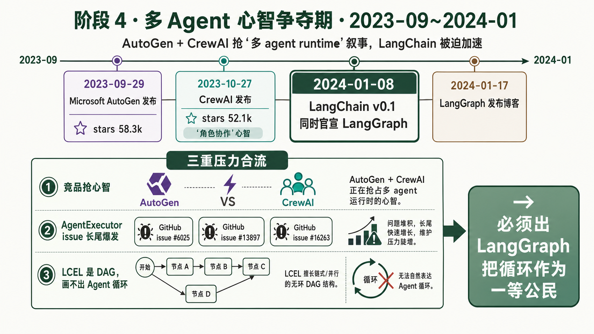
社区压力
- AutoGen 2023-09-29 由 Microsoft 开源，主打多 agent 对话；累计 stars 58.3k。同期论文与项目同步公开，迅速占领"multi-agent runtime" 心智。
- CrewAI 2023-10-27 仓库创建，主打"角色协作 / crew / task"；累计 stars 52.1k，PyPI 累计 27M+ 下载。CrewAI 把多 agent 讲成更直观的心智（每个 agent = 一个角色），抢走非工程师用户。
- LangChain 内部
AgentExecutorissue 长尾爆发（#6025 · #13897 · #16263 · #30608...）——iteration limit / 提前终止 / 重复 tool call / 无法 pause/checkpoint 等。用户从内部抱怨 Agent 不可控，外部又被 AutoGen / CrewAI 抢走，三重压力同时合流。
LangChain 团队的设计回应
- 产出：LangChain 把 agent 问题从"一个 AgentExecutor" 升级到"可自定义 agent runtime"。这是设计观念的根本转变。
- 版本：2024-01-08
langchain v0.1.0同时官宣 langgraph；2024-01-17 LangGraph 发布博客 明确点名 DAG 局限，提出 cyclical graph + state schema。 - 关键引证："We've added a lot of parameters and functionality to AgentExecutor, but it's still just one way of running a loop."（v0.1.0 博客原话——LangChain 官方首次承认 AgentExecutor 只是"一种循环"；正式退役要等到 v0.2 推荐迁移和 2025-10 v1 deprecation）
核心抽象 + 工程价值
Agent Runtime 概念正式诞生：agent 控制流可编排，而不是被框架硬塞一种循环。从"用预制循环" 转向"用户显式描述运行时"。
没解决的问题 → 起爆点
竞品压力证明：用户要的不是更多 Chain，而是可理解、可改写的 agent 执行模型。这直接把 LangGraph 推到台前——进入阶段 5 LangGraph 确立期。
7阶段 5 · LangGraph 确立期 · 显式状态图接管 Agent · 2024-01~2024-05
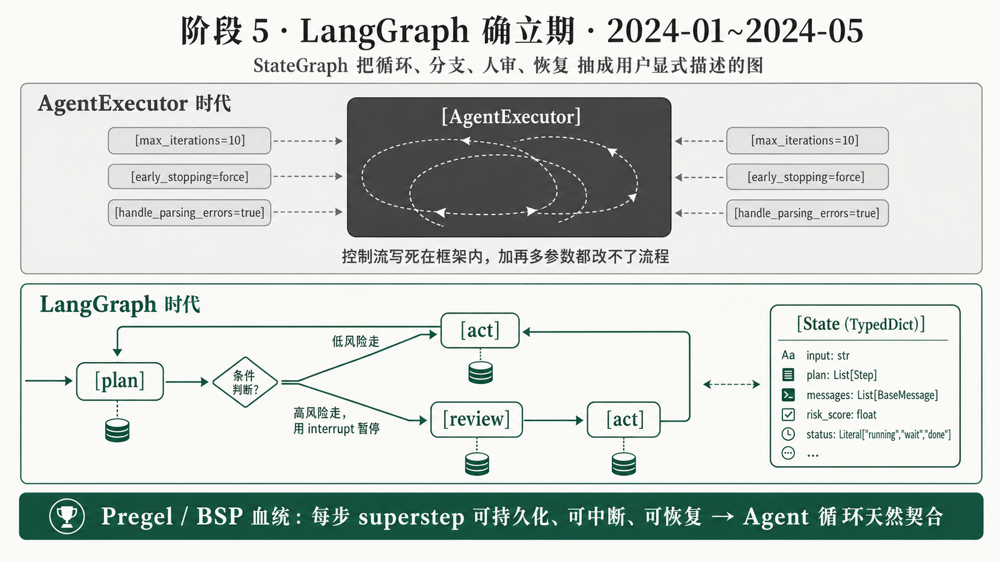
社区压力
- AutoGen / CrewAI 多 agent 热点已立；LangChain 必须给"循环 / 分支 / 状态 / 协作" 一个开源回答。
- 旧 AgentExecutor 被官方承认只是一种 loop，承载不了审批 / 强制工具 / 条件路由 / 恢复。langgraph #265 issue 用户 day 1 就要求 polyfill AgentExecutor——说明 LangGraph 一开始就被定位为替换者。
LangChain 团队的设计回应
产出：LangGraph——把 Agent 的"循环 + 状态 + 分支 + 人审 + 恢复" 抽成用户显式描述的图，而不是 AgentExecutor 那种"把控制流硬编码在框架内部"。版本：2024-01-17 LangGraph 发布博客 · 2024-05-10 langchain v0.2 把 LangGraph 写成 "the recommended way to build agents"。
LangGraph 5 个一等公民（每个零件都用最朴素的中文讲清"是什么 + 何时用"）：
| 零件 | 中文一句话 | 解决 AgentExecutor 的什么死结 |
|---|---|---|
StateGraph | 带状态的循环图：你用 add_node（加节点）+ add_edge（加边）+ add_conditional_edges（加条件边）描述图，节点是函数，边是路由，整张图共享一个 State 数据结构（用 Python TypedDict 定义） | 控制流"从框架内隐藏" 升级为"用户显式描述"。想加一步就加节点，想换分支就改条件边 |
CompiledStateGraph | 编译后的图：graph.compile(...) 把上面描述好的图编译成可执行对象，自己也是 Runnable（即 LCEL 接口都能用：.invoke / .stream / .batch） | 让 StateGraph 跟 LCEL 生态无缝接——一个 LangGraph app 可以作为 LCEL 管道里的一节 |
Channel | 节点之间的通信通道：多个节点都写同一个 State 字段时，Channel 决定怎么合并（reducer 函数说了算——比如"追加到 list"、"取最大值"、"留最后一个"） | 多 agent 并行写状态时的合并语义是清晰的、可控的——不会两个 agent 互相覆盖 |
Checkpointer | 断点恢复：每跑一步自动把 State 存到 SQLite / Postgres / Redis；挂了能从最近一步继续，不用从头再来。还能做"时间旅行"——读历史 State 改一改再 resume | 解决"跑长任务挂了就丢全部进度" 的痛——AgentExecutor 时代必须在外面套 Temporal 这类 workflow 引擎才能做 |
interrupt() | 人审挂起：在节点里调 interrupt({"need": "..."})，整个图立刻写盘 + 退出，控制权交回外部。外部喂回人审决策后从断点继续 | HITL（人在回路）一等公民。AgentExecutor 时代要等"人审通过" 只能轮询数据库，没有原生暂停语义 |
Pregel 血统（官方亲口承认）："LangGraph is inspired by Pregel and Apache Beam."。Pregel 是 Google 2010 年图计算论文，BSPBSP（Bulk Synchronous Parallel）= 1990 年 Leslie Valiant 提出的并行计算模型。把计算切成 superstep，每步内部所有 worker 并行算，步与步之间有同步屏障（barrier）。Google Pregel 把 BSP 用于图计算，LangGraph 把同样的思路用于 Agent 循环——每个 superstep 内部所有 ready 节点并行跑，结束时统一更新 State，可以 checkpoint。 模型把"循环" 切成 superstep，每步可持久化、可中断、可恢复——正好是 Agent 循环需要的。CompiledStateGraph 在源码里直接继承 Pregel 类（libs/langgraph/langgraph/pregel/main.py:448）。
核心抽象 + 工程价值
StateGraph：带状态的循环图。工程价值：让 Agent 控制流显式可控 + 可中断 + 可恢复。
同一个"先 plan，再 act，高风险走人审" 的需求，AgentExecutor 时代 vs LangGraph 时代怎么写：
| ❌ AgentExecutor 时代（2023） | ✅ LangGraph 时代（2024+） |
|---|---|
from langchain.agents import (
AgentExecutor, create_react_agent
)
agent = create_react_agent(llm, tools, prompt)
executor = AgentExecutor(
agent=agent,
tools=tools,
max_iterations=10, # 硬编码循环次数上限
early_stopping_method="force",
handle_parsing_errors=True,
# ❌ 想插人审？没有原生位置
# ❌ 想挂了恢复？没有 checkpoint
# ❌ 想加分支？要继承 AgentExecutor
)
executor.invoke({"input": "..."})
# 跑挂了 → 从头再来
# 跑到高风险动作 → 没办法暂停等人 |
from langgraph.graph import StateGraph, END
from langgraph.checkpoint.sqlite import SqliteSaver
# 1. 显式描述图（节点 + 边 + 条件路由）
g = StateGraph(MyState) # State 是 TypedDict
g.add_node("plan", plan_fn) # 节点 = 函数
g.add_node("act", act_fn)
g.add_node("review", lambda s: # 高风险节点 = 喊停等人
interrupt({"need": "human approval"}))
g.add_conditional_edges( # 条件分支：
"plan", route_fn, # plan 完了判断风险
{"safe": "act", "risky": "review"})
g.add_edge("review", "act") # 人审过了继续 act
g.add_edge("act", "plan") # act 完回到 plan（循环！）
# 2. 编译，挂 checkpointer
app = g.compile(checkpointer=SqliteSaver(...))
# 3. 跑（自动断点续跑、自动人审挂起）
app.invoke({"goal": "..."},
config={"thread_id": "case-123"}) |
| 问题： · 控制流写死在 AgentExecutor 内部，用户只能调参数不能改流程 · 高风险动作没办法停下来等人——只能跑完再 review · 跑挂了无 checkpoint，必须从头开始 · 分支只能靠 prompt 让 LLM 自己想，框架层没有 if-else · 多 agent 协作？AgentExecutor 只跑一个 agent，多个要自己写胶水 · Harrison 原话："just one way of running a loop" |
升级了什么： · 控制流用户显式画图——加节点 / 改条件边 / 加循环 / 嵌子图，都是改图不是改框架 · interrupt() 一行让图停在任意节点等外部喂决策回来· Checkpointer 自动持久化每一步 State，挂了 resume 就行· add_conditional_edges 是框架级 if-else，不靠 LLM· 多 agent 就是多节点，节点之间用 Channel 通信，框架原生支持 · 每步 State 落盘 → 天然可观测、可调试、可回放 |
没解决的问题 → 起爆点
新 runtime 出来了，但旧 LangChain 抽象债没消失——社区仍会把"LangChain 抽象重" 的旧印象投射到新路线上。这种认知滞后 直接催生阶段 6 推荐路径迁移期——Harrison 必须亲自下场反复说"新的不是老的那个"，并把 LangGraph 升为 v0.2 推荐路径。
8阶段 6 · 推荐路径迁移期 · 旧 LangChain 与新 LangGraph 并存 · 2024-05~2024-11
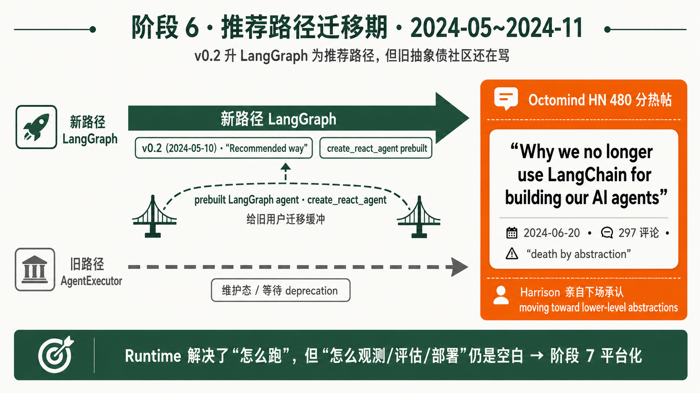
社区压力
- Octomind 480 分热帖（2024-06-20，HN id=40739982）《Why we no longer use LangChain for building our AI agents》：297 评论，反向证明旧 LangChain 抽象债没消失。原话："Most LLM applications require nothing more than string handling, API calls, loops" + "death by abstraction"。Harrison Chase 亲自下场承认 "moving toward lower-level abstractions via LangGraph"。
- 同期 LangGraph 逐步起量：累计 PyPI 下载向 323M 走、stars 向 32.8k 走，新路线开始被真实采用，但社区批评仍指向老品牌。
- v0.2 把
langchain与langchain-communitylangchain-community = 第三方集成（500+ LLM provider / vectorstore / document loader / tool）的集中仓库。v0.2 把它从 langchain 主包拆出来，主因之一是降 CVE 面（社区集成代码质量参差，主包被牵连出 CVE 是个痛点）。 解耦的重要工程理由之一是降低 CVECVE（Common Vulnerabilities and Exposures）= 公开记录的安全漏洞编号系统。开源项目被分配 CVE 编号意味着安全圈正式标记了问题，企业用户的安全团队会扫到并要求升级。LangChain 早期因为 community 集成代码质量参差，主包跟着被打多个 CVE，这是 v0.2 拆 community 的硬动机之一。 面（"occasionally vulnerable to CVEs"），同时配套稳定性承诺 + SemVerSemVer（Semantic Versioning）= 语义化版本号规范：MAJOR.MINOR.PATCH，MAJOR 升级才允许 breaking change。LangChain 在 0.x 阶段经常 minor 版就有 breaking change，被批评 "不敢上生产"；v0.2 起承诺遵守 SemVer，是迈向企业级稳定承诺的关键。 + 集成解耦（v0.2 博客）。
LangChain 团队的设计回应
- 产出：
prebuiltprebuilt = LangGraph 提供的开箱即用 Agent 模板包（langgraph.prebuilt子模块）。最知名的是create_react_agent——一行调用就起一个 ReAct loop。给 0.2 时代不想从零写 StateGraph 的用户一个迁移缓冲，让旧 AgentExecutor 用户能直接迁过来。 LangGraph agent ·create_react_agent（旧 ReActReAct = 2022-10 Yao et al. 的论文 (arXiv:2210.03629)，提出 LLM 用 "Reasoning + Acting 交替" 完成任务的范式：模型先输出 Thought（思考）→ Action（调工具）→ Observation（看结果）→ 再 Thought… 直到给出 Final Answer。LangChain 早期的 Agent 默认就是 ReAct 实现，所以叫create_react_agent。 体验直接在新 runtime 上跑）· LangGraph docs / academy / studio 路线 - 版本：2024-05 langchain v0.2 官方把 AgentExecutor 推向维护态，推荐 LangGraph；docs PR #29277 "Replace initialize_agent with langgraph.prebuilt.create_react_agent" 是这个过渡的痕迹。
- 2024-09-16 v0.3 强制 Pydantic 2，清理旧依赖，为 1.0 铺路
核心抽象 + 工程价值
prebuilt agent：旧体验跑在新 runtime 上，工程价值：迁移不必从零写图，给社区一个缓冲坡。
没解决的问题 → 起爆点
Runtime 解决"怎么跑"，但生产还要回答"怎么观测 / 评估 / 部署 / 回放"。LangServe 的轻量部署模型开始显得不够——同期 LangSmith 观测需求高速增长，但观测工具不能替代部署 / 调度 / HITLHITL（Human-in-the-Loop）= 人在回路。Agent 在高风险动作（封号、转账、公开发言）前停下来等人审，人确认后再继续。LangGraph 的 interrupt() + Checkpointer 是这一模式的标准实现。风控场景"先 Agent 自动定级 → 高风险走人工二审" 就是典型 HITL。 平台能力，直接进入阶段 7 平台化取舍期。
9阶段 7 · 平台化取舍期 · LangServe 退场，LangSmith / Platform 上位 · 2024-11~2025-10
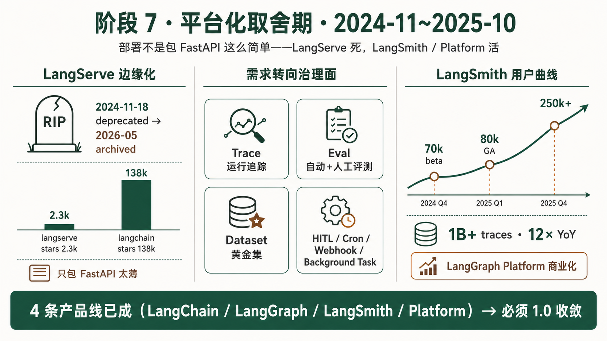
社区压力
- LangServe 边缘化：stars 仅 2.3k，对比 langchain 138k、langgraph 32.8k——差几十倍，已经是"边缘资产"，不是热门组件被砍。
- LangSmith 用户数指数增长：70k beta（2023-07）→ 80k GA（2024-02）→ 250k+（2025-02）；累计 1B traces；2025-10 Series B 披露 monthly trace volume 12× YoY。说明生产痛点已转向观测 + 评估 + dataset + monitor。
- AutoGen v0.4 同期重写（2025-01-14）event-driven 架构——微软自己也承认旧架构有 observability / scale 问题，与 LangChain 平行回应同一类压力。
LangChain 团队的设计回应
- 产出：① LangServeLangServe = 2023 年发布的工具，把 LangChain Runnable 自动包装成 FastAPI 服务（带 OpenAPI 文档、流式响应、Playground UI）。2024-11-18 标 deprecated，2026-05 仓库 archived。原因：① 部署不止是"包 FastAPI"，还要调度 / cron / HITL / 持久化，LangServe 太薄 ② LangGraph Platform 商业化后承接了完整需求 ③ stars 仅 2.3k vs langchain 138k，社区从未真正采纳。 deprecated（2024-11-18 公告，2026-05-05 仓库 archived）② LangSmithLangSmith = LangChain Inc 的商业观测平台：trace（run tree）+ dataset（黄金集）+ evaluation（LLM-as-judge + 人工标注）+ prompt versioning + experiment comparison。SDK（
langsmith）MIT 开源；server / Self-hosted / Platform 闭源付费。商业化现金牛——250k+ 用户、1B+ traces。 强化 trace / eval / dataset / monitor / prompt versioning ③ LangGraph PlatformLangGraph Platform = LangChain Inc 2024-11 推出的商业部署平台。提供 durable execution（图状态持久化）+ scheduling（定时触发）+ cron + webhook + HITL UI + background task。承接了 LangServe 留下的部署空白，且把 HITL 做成产品级能力。闭源付费，对应 Self-hosted Enterprise 套餐。 商业化（durable execution + scheduling + cron + webhook + HITL + background task） - 版本：2024-11-18 LangServe deprecation 公告；后续 LangGraph Platform 正式上线
- 关键引证：langserve issue #791 "Recommending LangGraph Platform for new projects"
核心抽象 + 工程价值
Trace / Eval / Platform 三件套：让 agent 上线后能被治理。工程价值：把"开发 agent" 和"运行 agent" 拆成两个产品——开源 runtime（LangGraph）+ 商业平台（LangSmith / Platform）。
没解决的问题 → 起爆点
开源 runtime 和商业平台边界清楚了，但生态心智仍分裂：LangChain / LangGraph / LangSmith / Platform 谁是主角？企业采购需要一个稳定品牌承诺——直接催生阶段 8 1.0 收敛期。
10阶段 8 · 1.0 收敛期 · LangChain 变薄，LangGraph 成为底座 · 2025-10~至今
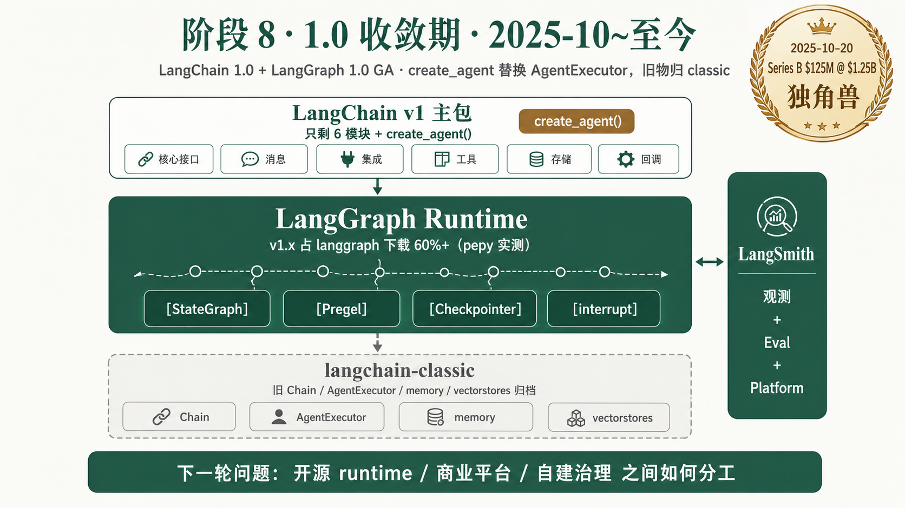
社区压力
- Series B $125M @ $1.25B 估值（2025-10-20），独角兽身份——商业上必须给企业稳定架构承诺，不能继续 0.x 频繁 breaking change。
- LangGraph v1.x 发布 7 个月内占 langgraph 下载 60%+（pepy 实测，2026-05-24）——说明用户确实在迁移到新范式，范式切换不是口号。
- Harrison Chase 三周年反省（2025-10-20，官方博客）："we traded power for ease of use" ... "the same high-level interfaces ... were now getting in the way when people tried to customize them to go to production" —— 是最重的一段，承认老 LangChain "用易用性换了表达力"，生产场景下反而挡路。
LangChain 团队的设计回应
- 产出：① LangChain 1.0 + LangGraph 1.0 GA（2025-10-22）②
create_agent()成为新的推荐高层入口（supersede 旧 AgentExecutor；create_react_agent仍作为 prebuilt 兼容路径保留），底层完全跑在 LangGraph 上（langchain/agents/factory.py直接import langgraph）③ 旧 Chain / AgentExecutor / memory / vectorstores 全部迁入langchain-classic隔离归档 ④ 主包瘦身到只剩 6 个模块 - 版本：2025-10-22 双 GA；同期 changelog 明确写 "The older ways of defining agents — through Agent and AgentExecutor — are officially deprecated."
核心抽象 + 工程价值
create_agent：薄入口 + 图 runtime。工程价值：默认把 agent 跑在可靠运行时上，用户不需要先理解 StateGraph 也能起步。
没解决的问题 → 起爆点
LangChain 已从"大而全框架" 收敛为入口和协议层；下一轮问题会变成：开源 runtime / 商业平台 / 用户自建治理系统 之间如何分工？多 Agent 真生产部署的边界在哪？这是第 12 章对未来的判断。
11演进规律 · 三条主线
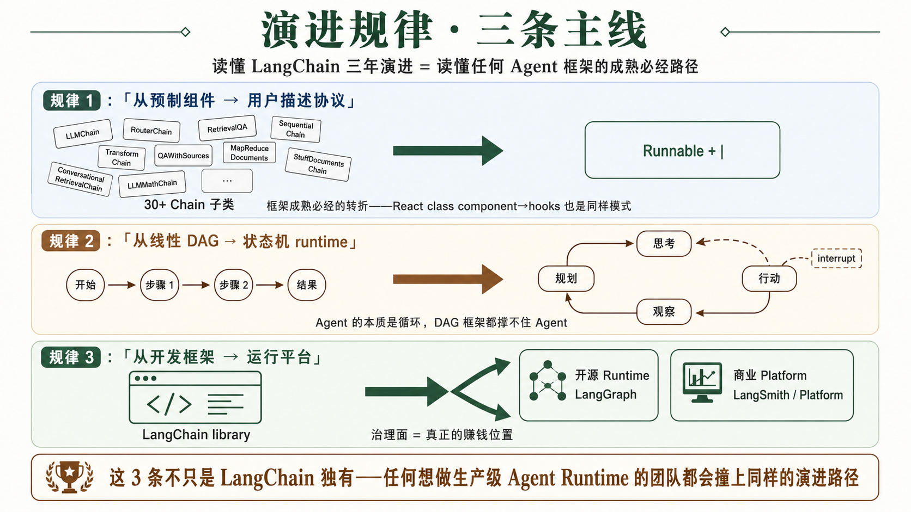
把 8 个阶段的"外部压力 → 内部回应" 循环，抽出 3 条可迁移的规律。这 3 条不是 LangChain 独有的——任何想做生产级 Agent Runtime 的团队都会撞上同样的演进路径。
11.1规律 1 · 从"预制组件" 到"用户描述协议"
阶段 1-2 LangChain 靠子类化预制 Chain（SequentialChain / LLMChain / ConversationChain）解决"从 0 到 1"，但 Chain 越多越成黑盒。阶段 3 LCEL 用 Runnable + | 把"预制" 翻成"用户描述"——这是所有框架成熟必经的转折。
可迁移结论：当你的 Agent 框架里"必须读源码才知道这个组件干啥" 的子类超过 30 个，就该考虑做协议化重构。这条规律不只 LangChain 撞上——Spring 早期 XML 配置爆炸、React class component → hooks，都是同一类演进。
11.2规律 2 · 从"线性 DAG" 到"状态机 runtime"
阶段 3 LCEL 解决了"串得优雅"，但设计上就是 DAG，画不出 Agent 循环。阶段 4-5 LangGraph 借 Google Pregel 的 BSP 模型，把"循环 + 状态 + 分支 + 中断恢复" 抽成一等公民。
可迁移结论：Agent 的本质是循环（think → act → observe → think），任何只支持 DAG 的框架（包括 LCEL / Airflow / Dagster）都不适合做 Agent runtime。如果你在 Java / Go 做 Agent 框架，从第一天就要考虑 state graph + checkpoint + interrupt，不要先做 DAG 再补循环。
11.3规律 3 · 从"开发框架" 到"运行平台"（开源 runtime + 商业 platform 分层）
阶段 6-7 LangChain 把"开发 agent" 和"运行 agent" 拆开：开源 runtime（LangGraph）解决怎么跑，商业平台（LangSmith / LangGraph Platform）解决怎么观测 / 评估 / 部署 / HITL。LangServe 死、LangSmith 活，是这条规律的选择题——把部署当成 FastAPI 包装 没价值，把部署当成 trace + eval + dataset + 调度 才有商业空间。
可迁移结论：Agent 框架的商业化 ≠ "更好的部署工具"，而 = "更好的治理 + 观测 + 评估闭环"。任何想商业化 Agent 框架的团队，把精力放在 trace/eval/dataset/HITL，比放在 deployment 价值大 10×。
12对 Agent Runtime 未来的判断
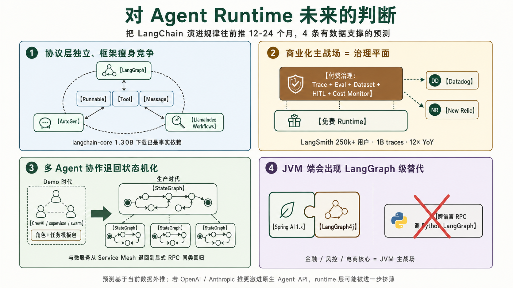
把 LangChain 演进规律往前推：未来 12-24 个月，Agent Runtime 会沿什么方向走？给 4 条有数据支撑的预测。
12.1预测 1 · 协议层会进一步独立，框架层会"瘦身竞争"
langchain-core 累计 1.30B 下载 已是事实标准，连 LangChain 的竞品也在依赖它。未来 12-24 个月，Runnable / Tool / Message 等协议更可能被事实标准化、或被多个 runtime 互相兼容（不一定走到 OpenTelemetry 那样的中立治理，但会形成"实际无法绕开" 的局面）。谁能定义协议，谁就赢了一半生态。
12.2预测 2 · 商业化主战场是"治理平面"，不是 runtime
LangSmith 用户 250k+、1B traces、12× YoY——这是 Agent 商业化的真实需求量级。开源 runtime（LangGraph、AutoGen、LlamaIndex Workflows）会持续免费竞争，真正的赚钱位置是"trace / eval / dataset / HITL / cost monitor"这套治理面。Datadog / New Relic 类公司会被迫进场，反过来 LangSmith 们也会向通用 APM 靠拢。
12.3预测 3 · "多 Agent 协作" 会从模板化退回到状态机化
CrewAI / supervisor / swarm 这类"角色 + 任务" 模板包单靠模板不足以承载生产 runtime——生产会回到显式状态、持久化、治理，被还原为大状态图 + 子状态图嵌套 + 显式 Channel 通信。"Agent 套 Agent" 的口号会让位给"大 StateGraph 调度小 StateGraph"——这与微服务从早期 Service Mesh 概念退回到显式 RPC + 服务网格控制面 是同一类回归。
12.4预测 4 · JVM / Java 生态会出现"LangGraph for JVM" 级别替代
LangChain 系虽有 LangChain.js / LangGraph JS，但主叙事与最成熟 runtime 主要集中在 Python；企业生产线（特别是金融 / 风控 / 电商核心）大量是 JVM，核心链路仍需要原生替代。LangGraph4j 已在跑，Spring AI 1.x 也在补 ChatClient + ChatMemory + VectorStore。未来 12-24 个月，JVM 端会出现至少一个能与 LangGraph 对标的 Agent runtime——可能由 Spring AI 团队直接做，也可能是社区项目（如 LangGraph4j 升级）。不会有人在 Java 生产链路里跨语言调 Python 的 LangGraph。
风险提示：这 4 条预测不是水晶球，是把当前数据曲线外推。如果 OpenAI / Anthropic 推出更激进的原生 Agent API（比 Assistants v2 / Responses API 更深），可能把 runtime 层挤压到极薄——届时 LangChain 的位置可能更像"多模型 + 多协议适配器"，而不是"runtime 提供者"。
A参考来源（社区数据 + 官方原话）
本文每个数据点都对应一个可溯源链接。下面按类别组织，全部抓取日期 2026-05-24（除单独标注）。
A.1PyPI 下载量
- pepy.tech/project/langchain · langchain-core · langgraph · langsmith
- pypistats.org/packages/langchain（按月聚合 JSON：/api/packages/langchain/overall）
- pypistats.org/packages/langchain-community
A.2GitHub 仓库 / Stars / Issues
- langchain-ai/langchain（138k stars）· langgraph（32.8k）· langserve（2.3k · archived 2026-05-05）
- AgentExecutor 痛点 issue 样本：#6025 · #13897 · #16263 · #29277（官方迁移呼吁）· #30608 · #31485 · #32675 · #36139 · #36764
- langgraph #265（day 1 要求 polyfill AgentExecutor）· langserve #791（官方建议改用 LangGraph Platform）· langchainjs #4876（跨语言同病）
- 竞品：microsoft/autogen（58.3k）· crewAIInc/crewAI（52.1k）· run-llama/llama_index（49.6k）
A.3LangChain 官方博客 / changelog
- 三周年总结（2025-10-20） · Series B 公告 · LangSmith GA
- LCEL 官方博客（5 个旧 Chain 痛点）· LangGraph 发布博客（"directed acyclic graphs (DAGs)... lacked cycles"）· is-langgraph-used-in-production
- v0.1.0 博客（"AgentExecutor is still just one way of running a loop"）· v0.2 博客（CVE 解耦理由）· v0.3 博客（Pydantic 2）· 1.0 双 GA 公告
- v1 迁移官方文档（"Agent and AgentExecutor officially deprecated"）· changelog
A.4HackerNews 批评原帖（直接 ID 链接）
- id=36097439（2023-05 "bloated abstraction"）· id=36442231（2023-06 "cruft and abstraction"）· id=36645575（2023-07 "Langchain Is Pointless"）
- id=36647964（2023-07 "chains 'composable' not really"）· id=36648272（2023-07 "abstractions inherently flawed"）· id=36725982（2023-07 "The Problem with LangChain"）
- id=40739982（2024-06-20 Octomind "Why we no longer use LangChain" · 480 分 / 297 评论 · Harrison 亲自下场）
- 其他批评：Shashank Guda Medium（"over-engineered for simple tasks ... fragile for complex ones"）· AIM "LangChain is garbage software" · Hamel Husain 推文（2024-02-08）
A.5商业 / 融资
- Seed $10M（2023-04 Benchmark）· Series A $25M @ $200M（2024-02-15 Sequoia）· Series B $125M @ $1.25B（2025-10-20 IVP）
- Fortune Series B 报道 · TechCrunch Series B · Contrary Research 公司分析 · Sacra · Fundz Series A 记录
A.6竞品 / 同类对照
- AutoGen v0.4 发布博客（2025-01-14 event-driven 重写） · Microsoft Research 同期博客 · CrewAI platform statistics
A.7历史 stars 排行
- star-history best-of-2023 · vstorm.co LangChain history · Runa Capital ROSS Index Q2 2023 · ROSS Q3 2023
A.8姊妹文档
- 《Agent 3 层理念架构》 · agent-3-layer-architecture.html · 信息/运行/保证三层 + 12 组件矩阵
- 《风控场景迁移落地 + LangChain 生态演进》 · agent-migration-and-langchain.html · 风控视角 12 组件 A/B 分类
- 《Agent 生态认知地图》 · agent-ecosystem-map.html · 7 层生态部件栈视角